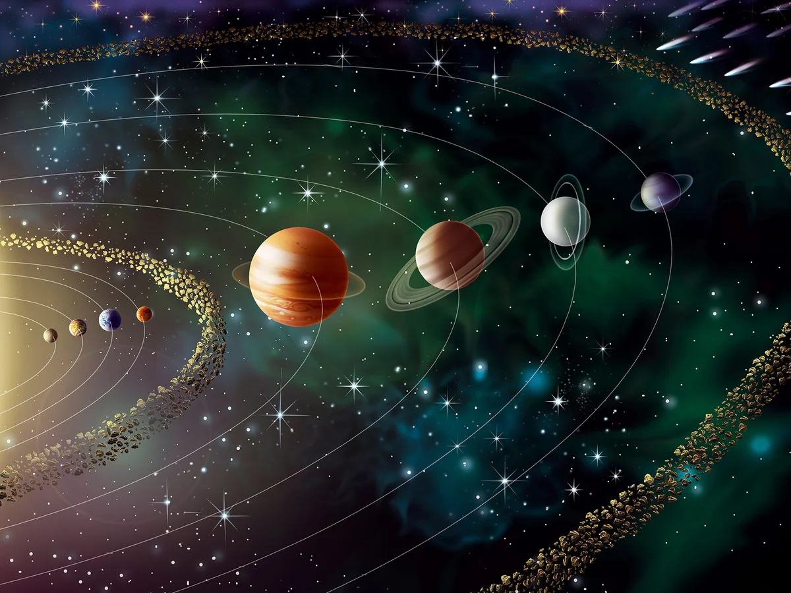
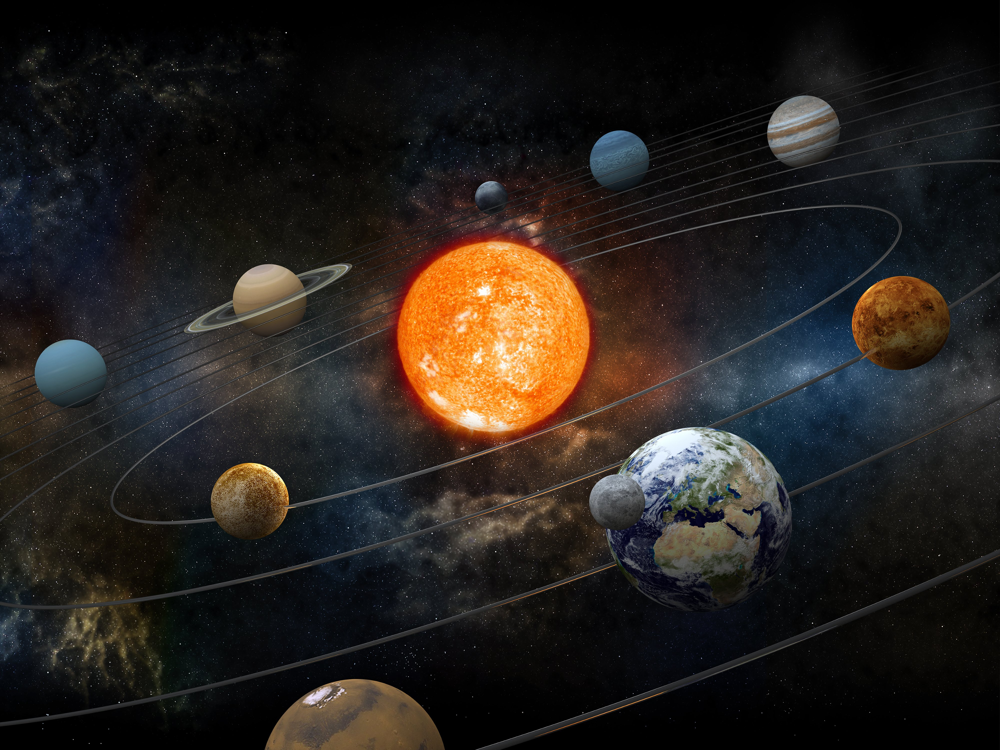

Pământul se rotește în jurul axei sale la o viteză de aproximativ 1670 km/h la ecuator, dar nu simțim acest lucru datorită gravitației și atmosferei care se mișcă împreună cu planeta.
Viteza luminii în vid este de aproximativ 299.792 km pe secundă, iar lumina de la Soare ajunge pe Pământ în doar 8 minute și 20 de secunde.
Europa, o lună a lui Jupiter, este acoperită de gheață, dar se crede că sub suprafața sa există un ocean global de apă lichidă care ar putea găzdui forme de viață.
Conform teoriei Big Bang-ului, universul s-a format acum aproximativ 13,8 miliarde de ani și continuă să se extindă, iar galaxiile se îndepărtează unele de altele.
